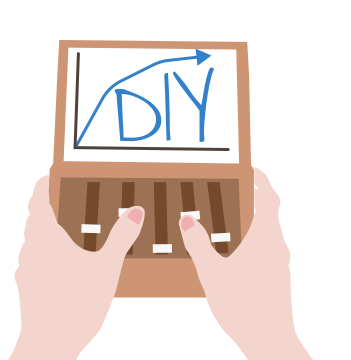
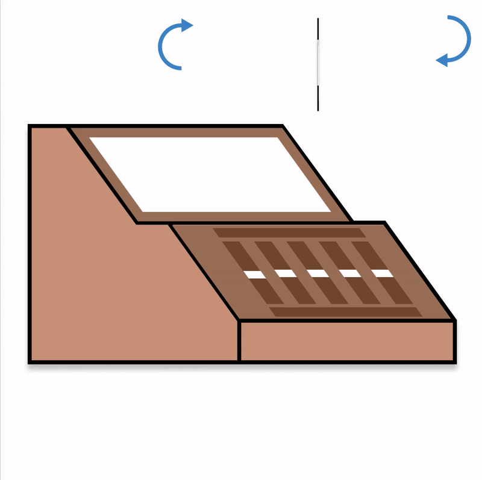
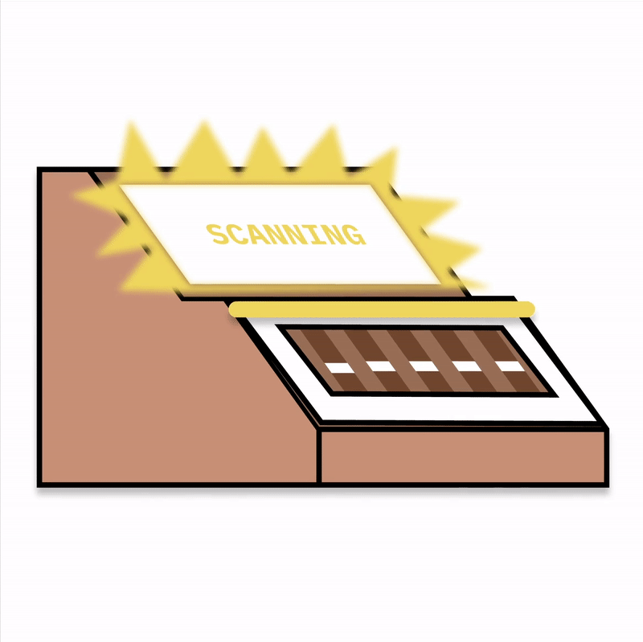
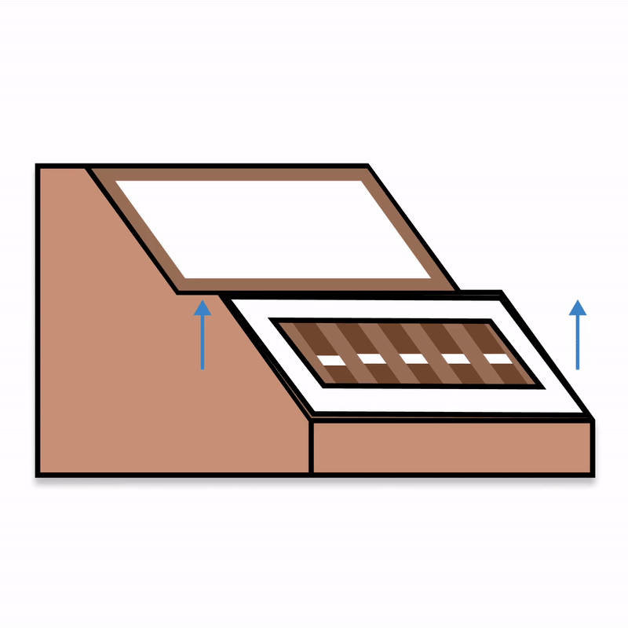

<!DOCTYPE html>
<html>

<head>
  <meta charset="utf-8">
  <title>Al's Grocery</title>

  <link rel="preconnect" href="https://fonts.googleapis.com">
  <link rel="preconnect" href="https://fonts.gstatic.com" crossorigin>
  <link href="https://fonts.googleapis.com/css2?family=Mali&family=Patrick+Hand&display=swap" rel="stylesheet">

  <link rel="stylesheet" href="../style.css">
  <script src="https://unpkg.com/beholder-detection@1.3.0/dist/beholder-detection.js"></script>

  <script src="ChartManager.js"></script>
  <script src="index.js"></script>
</head>

<body>
  <section id="beholder-root" class="hidden"></section>
  <!-- <section id="beholder-root"></section> -->

  <!-- <section id="landing-view" class="view-section">
    
    <button id="activate-tutorial">Tutorial</button>
    <button id="activate-diy-bar">DIY Charts</button>
  </section>

  <section id="scan-view" class="view-section offscreen">
    
    
    

    <p id="scan-tip">Flip the paper template, place it on the panel, and press SCAN.</p>
    <button id="activate-scan">SCAN</button>
    <button id="activate-chart" class="hidden">START</button>
  </section> -->

  <section id="bar-chart-view" class="view-section offscreen">
    <button id="return-home"></button>
    <button id="pause-detection"></button>

    <canvas id="pie-chart" width="500" height="300"></canvas>


    <!-- <canvas id="scanned-chart-stuff" class="hidden" width=310 height=30></canvas> -->

  </section>
</body>

</html>